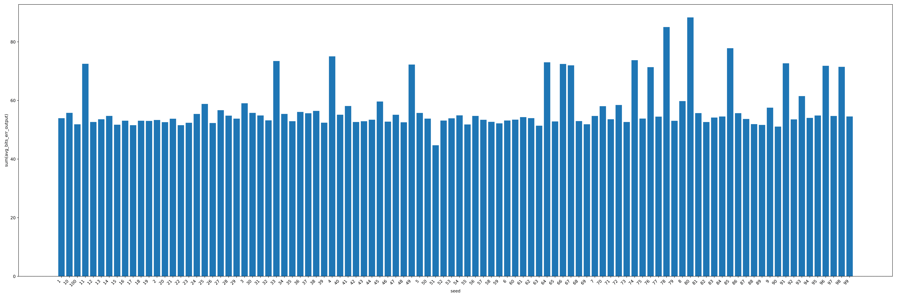
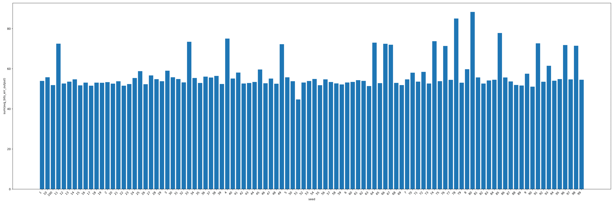

The Herbie developers are excited to announce Herbie 1.6! This release focuses on further integration of egg, improved reliability, and a better web interface. Our favorite features are below.

What is Herbie? Herbie automatically improves the accuracy of floating point expressions. This avoids the bugs, errors, and surprises that so often occur with floating point arithmetic.
Join us! Join the Herbie developers on the
FPBench Slack, at the monthly
FPBench community meetings, and at
FPTalks 2022.
 


Despite the fact that most users interact with Herbie via the demo page, the web interface has historically had a minimal design. As part of a ongoing push to make Herbie more user-friendly, new features have been added to the web interface including mandatory preconditions, better warnings and errors, and an overall cleaner design. We expect the demo page to change considerably in the coming year.
 |
 |
Herbie now synthesizes branch conditions with shorter split values. Before, Herbie's binary search algorithm would narrow down the set of possible split values to a small interval from which Herbie took the midpoint. Often the midpoint had a long string representation which made it seem like it was chosen with high precision. Now Herbie will choose a value on that same interval with a short string representation. This change makes output programs more readable and highlights the low precision in the result of binary search.
Herbie has undergone a significant architectural change since the previous release. Although this change may not be visible to users, we hope that it makes future Herbie development more streamlined and provides a clearer answer to the question: what is Herbie? In particular, two major improvements include adding the "patch table" and moving number system specifics out of Herbie's core architecture.
The patch table manages most rewriting capabilities, provides a minimal interface to generate variants from a set of expressions, and caches variants in case of duplicate input expressions. Creating this subsystem to handle variant generation more cleanly separates the "generate" and "test" parts within Herbie.
Herbie's double-precision and single-precision representations are now implemented as plugins that automatically ship with Herbie. Representation-specific operators and definitions are no longer present in Herbie's core architecure. This change makes Herbie representation-agnostic and loads double- and single-precision representations through the plugin interface. Not only is this design cleaner, but these plugins now serve as examples for plugin developers. In the future, we hope to move additional definitions out of core Herbie and into plugins such as error metrics and cost models (Pherbie).
j0, j1, y0, and y1
have been deprecated and will be removed in the next release.:precision racket flag instead.We want Herbie to be more useful to scientists, engineers, and programmers around the world. We've got a lot of features we're excited to work on in the coming months. Please report bugs, join the mailing list, or contribute.
If you find Herbie useful, let us know!